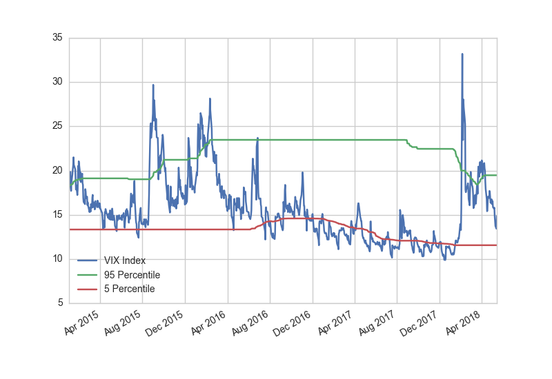

AQUMON use pattern recognition techniques to identify bull and bear market. Statistical results shows there exists a strong relationship between bear market probability and macroeconomic indicators. Then we establish a predictive model to forecast the probability of bear market by certain macroeconomic indicators.
{{ macro_indicator }}
{{ bear_prob }}
AQUMON macroeconomic models concludes that the most important driver to predict bear market probability in this week is VIX Index.
（可以考虑不显示熊市的概率数字，而是用温度计或者转速表的形式展现）
（这里会有一个概括性描述，比如：AQUMON认为行业和地区存在均值回归现象，短期内表现较差的行业在未来会有超额收益）
AQUMON believes in equity market, there exist mean reversion behavior among different sectors and regions, which means the poor performed stocks have greater chance to get higher returns in subsequent period. Based on that, AQUMON develops a systematic approach to quantify the intensity of mean reversion characteristics.
{{ sector_select }}
（这里会有一个总结性描述，比如：AQUMON认为Basic Materials和Energy行业未来反弹的空间较大）
AQUMON selects: Basic Materials and Energy
{{ region_select }}
（这里会有一个总结性描述，比如：AQUMON认为China和Canada地区未来反弹的空间较大）
AQUMON selects: China and Canada
VIX Index is a measure of 30-day expected volatility of US stock market, which can reveal the market sentiment. AQUMON studies the statistical characteristic of VIX Index an VIX futures contracts and evaluate which state the market is currently at.
{{ vix_data }}
（这里会有一个总结性描述，比如：目前VIX指数落于其历史合理区间内）
VIX Index is currently in its reasonable range, under which the market status is NORMAL.
The stock view is generated by AQUMON Multi-factor Strategy. It is a combination of fundamental analysis and state-of-the-art AI techniques. By diving into company characteristics, potential stocks can be selected out of more than three thousand stocks in China A-share market. Company characteristics are quantified as a series of factors which describe company styles in different dimensions. These factors could be value factor, growth factor, momentum factor, volatility factor and so on.
{{ acas_list }}
AQUMON recommands: 长江电力，爱尔眼科，贵州茅台
{{ acas_factor }}

{{ ahas_list }}
AQUMON recommands: 长江电力，爱尔眼科，贵州茅台
{{ ahas_factor }}
Incubated by the Hong Kong University of Science and Technology in 2016, Magnum Research secured its A Round funding led by Alibaba Entrepreneurs Fund in Jun 2017, which was later (Sep 2018) followed by funding from Bohai XingWang, L.P., managed by BOC International. The firm has grown its institutional business rapidly, commencing collaborations with more than 30 leading financial institutions, including banks, brokerages, insurance firms and wealth management companies. Since September 2017, it has also released its retail offering, making automated and low-cost global asset allocation possible for everybody in Hong Kong.
Magnum Research has three teams servicing our clients at all times: a group of quantitative scientists compiling our Quantitative Research team, Financial Markets team with years of experience, and lastly the IT team as capable as one in an Internet firm. The firm has grown to include 60+ people with background from HKUST, NUS, HKU, CUHK, etc., based in offices in Hong Kong, Shenzhen and Singapore.
This document is for illustration purposes only. All return figures provided here are based on hypothetical or simulated investing. This document does not constitute an offer to sell or a solicitation of any offer to invest. The information contained in this document does not purport to be complete nor accurate. This document may not be reproduced or distributed without the written authorization of Magnum Research Limited. Any reproduction or distribution of any of the contents of this document may constitute a violation of law. By accepting this document, you acknowledge and agree that all of the information contained in it shall be kept strictly confidential.
Certain information contained in this document includes observations and assumptions and involves significant elements of subjective judgement and analysis. No representations are made as to the accuracy of such observations and assumptions and there can be no assurances that actual events will not differ materially from those assumed.